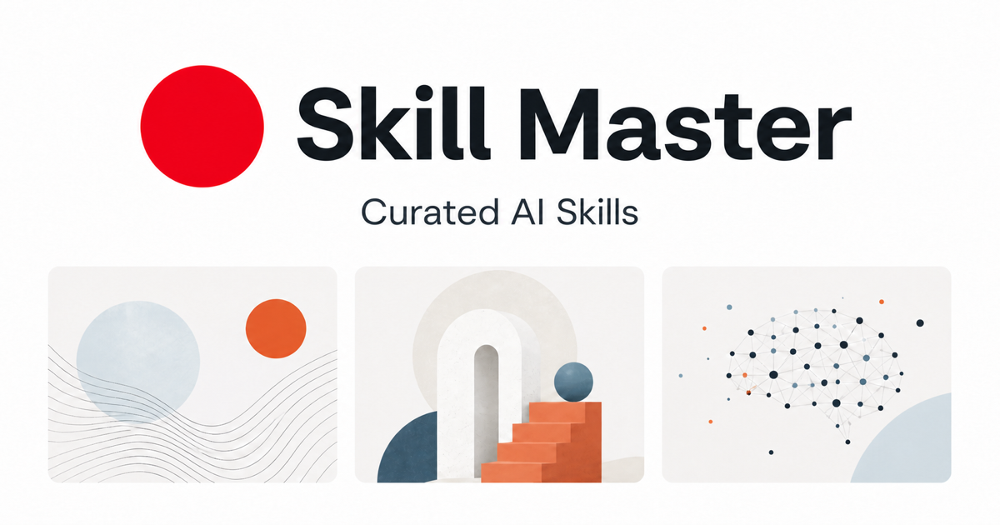

Skill Master：用工作情境搜尋並複製 Agent Skills 的整合平台

一句話摘要
Tommy 湯師爺分享 Skill Master，一個以工作情境搜尋 Agent Skills 的整合平台；網站會定期收錄、分類並檢查優質 skills，讓使用者能依需求找到合適技能並交給 AI Agent 使用。
原文重點
- Threads 上很多人有好的想法，但實作成果常與理想有落差。
- 差距常來自領域知識不足，而 skills 可以補上這一層專門知識。
- Skill Master 提供一個整合平台，定期爬取優質 skills 並做好分類。
- 使用者可以依需求讓 AI 爬取或複製合適 skill 來使用。
平台觀察
Skill Master 網站標語是「用工作情境搜尋 Skill，確認來源後直接複製給 Agent。」本次瀏覽時首頁顯示 781 個搜尋結果，並標示公開前會檢查格式、來源、授權與風險字樣，也保留發布者、原始來源與授權資訊。
首頁分類包含：
- 創作設計：圖像、簡報與創意製作。
- 成長行銷：內容、品牌與成長工作。
- 產品技術：開發、雲端與產品實作。
- 職場辦公：文件、協作與日常辦公。
- 教學講課：課程、教材與教學設計。
- 調研分析：搜尋、分析與證據整理。
值得收藏的原因
- Agent workflow 正在從「一次性 prompt」轉向「可重複、可移植、可驗證的 skills」。
- 對個人或團隊知識庫而言，這類平台可作為外部技能目錄與靈感來源。
- Skill Master 強調來源可追溯與公開前檢查，對未來把 skills 導入工作場景很重要。
- 可用來觀察哪些工作情境最適合被 skill 化：簡報、UX 檢查、安全掃描、雲端部署、內容設計等。
可延伸用法
- 把常用工作流整理成本地 Hermes skills，並用 Skill Master 找可借鏡的結構。
- 建立課程或工作坊的「技能包」：例如 AI 創作、簡報生成、研究整理、網頁設計。
- 將 skills 視為 Agent 的外掛式 SOP：每次任務前載入對應技能，降低模型臨場猜測。
- 追蹤熱門 skill 類別，作為 AI 工具教學與內容策展方向。
原始連結
https://www.threads.com/share/BAWaQnV9WD/
https://www.threads.com/@web3_tommy/post/DcXwEGRmu1J